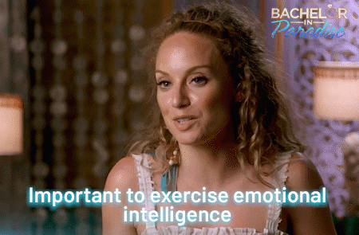

What's the tea on EQ?
In today's complex and interconnected world, success and fulfillment extend beyond intellectual abilities alone. Emotional intelligence, often referred to as EQ, has emerged as a vital component for personal and professional growth. This blog aims to provide a comprehensive overview of emotional intelligence, highlight the differences between EQ and IQ, and shed light on the importance of cultivating emotional intelligence in various aspects of life.
What is Emotional Intelligence (EQ)?
Emotional intelligence is the capacity to recognize, understand, and manage our own emotions and the emotions of others. It encompasses a range of skills, including self-awareness, self-regulation, empathy, motivation, and effective social skills. EQ involves perceiving and comprehending emotions, using emotions to facilitate thinking and decision-making, and effectively managing and expressing emotions in interpersonal interactions.
How is EQ different from IQ?
While IQ (intelligence quotient) measures cognitive abilities, EQ focuses on emotional and social capabilities. IQ primarily assesses analytical and logical thinking, problem-solving skills, and academic intelligence. On the other hand, EQ evaluates an individual's ability to understand and manage emotions, navigate social situations, and build and maintain relationships. While IQ remains relatively stable throughout life, EQ can be developed and enhanced through self-awareness and practice.

Why is EQ important?
Personal well-being:
Emotional intelligence plays a crucial role in our overall well-being. Individuals with high EQ are better equipped to manage stress, handle setbacks, and maintain a positive outlook. They exhibit greater resilience and are more likely to experience improved mental health and life satisfaction.
Enhanced Relationships:
EQ is the foundation of healthy and fulfilling relationships. By understanding our own emotions and empathizing with others, we can communicate effectively, resolve conflicts, and build deeper connections. Empathy and active listening, key components of EQ, foster trust and understanding in both personal and professional interactions.

Leadership and Professional Success:
Effective leadership demands more than just technical expertise. Leaders with high EQ can inspire and motivate others, adapt to changing circumstances, and navigate complex social dynamics. They possess strong interpersonal skills, which enable them to communicate authentically, build cohesive teams, and make informed decisions based on emotional and social factors.
Collaboration and Teamwork:
In today's collaborative work environments, EQ is invaluable. Individuals with high EQ understand and appreciate diverse perspectives, communicate openly, and collaborate effectively. They create inclusive spaces where everyone feels valued, fostering innovation and productivity within teams.
Conflict Resolution:
EQ equips individuals with the skills necessary to resolve conflicts constructively. By managing emotions, practicing empathy, and utilizing effective communication techniques, conflicts can be transformed into opportunities for growth and understanding.
Emotional intelligence, or EQ, represents a critical facet of human development and success. While IQ focuses on cognitive abilities, EQ delves into the realm of emotions, social awareness, and interpersonal skills. By nurturing and enhancing our emotional intelligence, we can cultivate fulfilling relationships, excel in our professional endeavors, and enhance our overall well-being. Developing EQ is a lifelong journey that requires self-reflection, empathy, and continuous practice. As we embrace the power of emotional intelligence, we open ourselves to a world of opportunities for personal growth and positive impact.